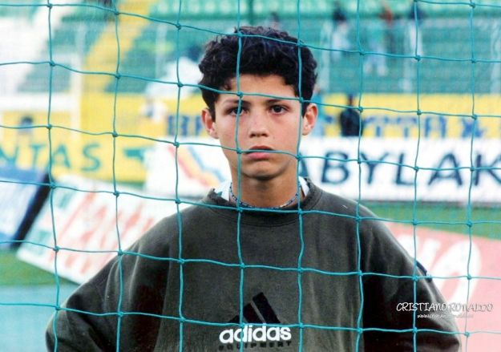

Cristiano Ronaldo
Portuguese footballer, one of the greatest players of all time and the all-time top scorer in men's international football.
See his career →
5Ballon d'Or awards
5Champions League titles
5clubs
1985year of birth
About him
Early life
Born on 5 February 1985 in Funchal, on the Portuguese island of Madeira. He grew up in a modest family and dreamed of football from childhood.

Personal life
Father of five children. His partner is Georgina Rodríguez. Known for his charity work, supporting children's hospitals and disaster relief.
National team
Captain of Portugal. European champion in 2016 and UEFA Nations League winner.